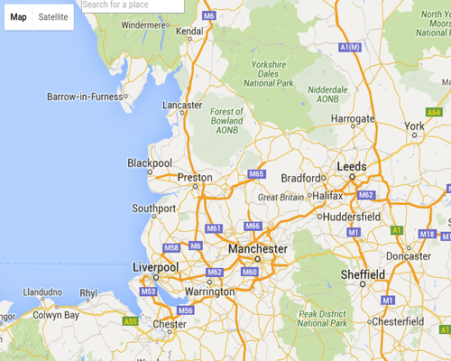
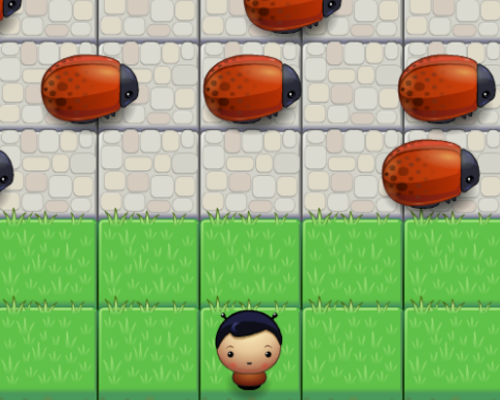
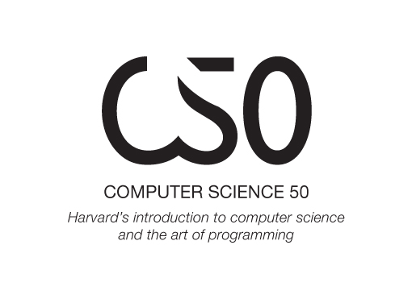

About this site
For now this is where I'll put things that I make. I may add other stuff later (apart from software) but for now this is it.
For now this is where I'll put things that I make. I may add other stuff later (apart from software) but for now this is it.
Stack Overflow
My first (very modest) open source contribution
Code from all 6 projects of the nanodegree
An integration of Google Maps and UK Police stop-search data
Clone of the classic arcade game
My completed problem sets and final project from CS50
